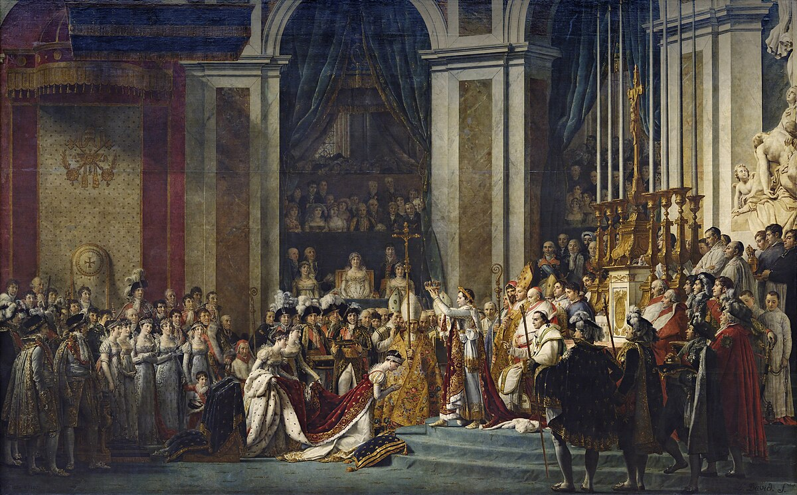

민중을 이끄는 자유의 여신

나폴레옹 1세의 대관식
「나폴레옹 1세의 대관식」은 프랑스 화가 자크 루이 다비드가
1805년부터 1807년 사이에 완성한 대형 역사화로,
1804년 파리 노트르담 대성당에서 열린 나폴레옹의 대관식 장면을 묘사하고 있습니다.
이 작품은 황제가 스스로 황제관을 쓰고, 황후 조제핀에게 왕관을 씌우는 순간을 담아내며,
전통적인 왕권과는 다른 새로운 권위와 정치적 메시지를 표현한 것이 특징입니다.
약 10m에 달하는 거대한 규모와 정교한 묘사, 인물들의 극적인 구성이 돋보이며,
실제 대관식에 참석했던 수십 명을 정확히 재현하여 기록화로서의 가치도 높습니다.
현재 루브르 박물관에 전시되어 있으며, 나폴레옹 시대를 대표하는 상징적인 회화입니다.

모나리자